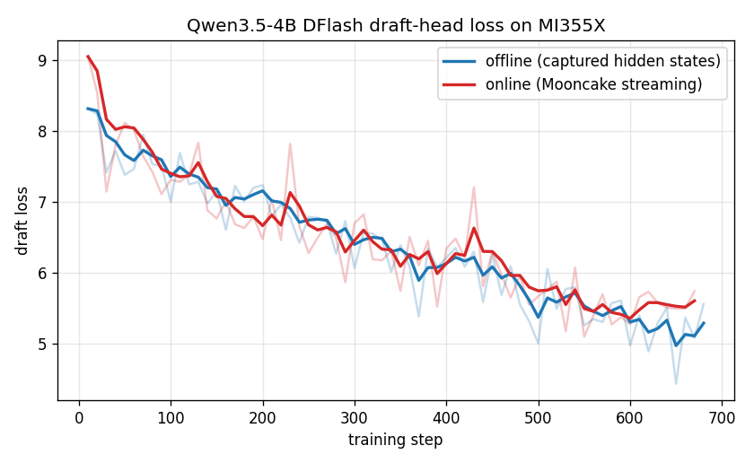
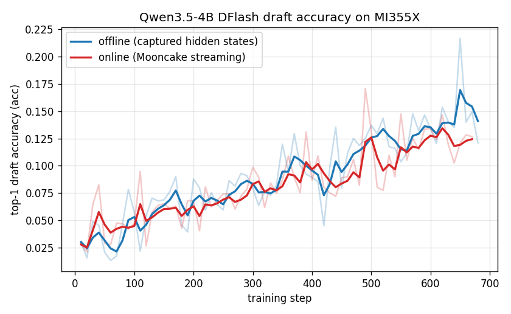
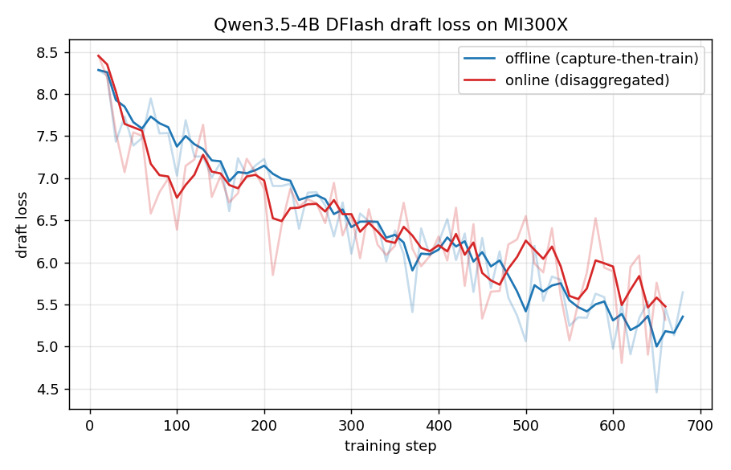
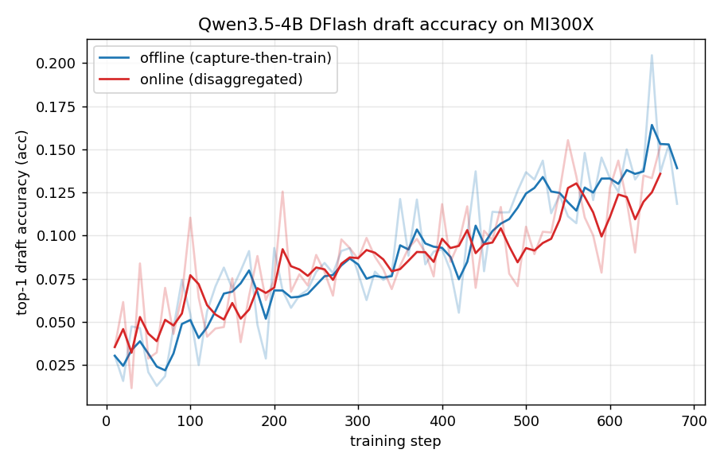

🚀 AMD ROCm Tutorial#
This is an end-to-end tutorial for running SpecForge on AMD Instinct GPUs (ROCm). It walks through the complete flow: installation → data preparation → offline training → online training → disaggregated training.
All commands assume a ROCm host with the AMD driver stack and Docker already installed. Validated on MI300X (gfx942) and MI355X (gfx950).
1. Installation#
On ROCm, install SpecForge into an environment that already provides a ROCm PyTorch and a ROCm SGLang, and install the package without dependencies so pip does not pull CUDA wheels over the working ROCm stack.
The recommended base is an official SGLang ROCm release container. These ship a ROCm PyTorch and an editable ROCm SGLang build, so SpecForge only needs to be cloned and installed on top.
Step 1: Pull the image for your accelerator#
The accelerator is baked into the tag, so use the image that matches your hardware:
# AMD Instinct MI300X (gfx942)
docker pull lmsysorg/sglang:v0.5.14-rocm720-mi30x
# AMD Instinct MI355X (gfx950)
docker pull lmsysorg/sglang:v0.5.14-rocm700-mi35x
Step 2: Start the container#
Expose the ROCm device nodes (swap in the tag for your accelerator). Use --name
and omit --rm so the checkout survives across sessions:
docker run -it --name specforge \
--device=/dev/kfd --device=/dev/dri \
--group-add video --cap-add SYS_PTRACE --security-opt seccomp=unconfined \
--ipc=host --shm-size=16g \
lmsysorg/sglang:v0.5.14-rocm720-mi30x \
bash
--device=/dev/kfd --device=/dev/dri --group-add video are required for ROCm
GPU access; --ipc=host --shm-size=16g gives Mooncake and PyTorch enough shared
memory. Re-enter the running container later with docker exec -it specforge bash.
Step 3: Clone and install SpecForge#
Inside the container, clone SpecForge into /workspace/SpecForge and register it
in editable mode without touching the image’s torch/sglang:
git clone https://github.com/sgl-project/SpecForge.git /workspace/SpecForge
cd /workspace/SpecForge
python -m pip install -e . --no-deps
--no-deps is mandatory: a full resolve pulls the CUDA SGLang stack and
clobbers the image’s ROCm torch/sglang. If a later step reports a missing
lightweight dependency (for example accelerate), install just that package,
also with --no-deps.
Step 4: Apply the capture patch (online runs only)#
These images pin SGLang to exactly 0.5.14 (editable at /sgl-workspace/sglang),
so the online capture patch applies with a plain git apply. Skip this step for
offline training, which reads features from disk and needs no capture service:
cd /sgl-workspace/sglang
git apply /workspace/SpecForge/patches/sglang/v0.5.14/spec-capture.patch
cd /workspace/SpecForge
The patch adds the --enable-spec-capture, --spec-capture-method, and
--spec-capture-aux-layer-ids server flags plus the sglang.srt.spec_capture_sink
module used by online capture.
Step 5: Attention backends on ROCm#
Use the sdpa or flex_attention attention backends for the trainer on
ROCm. The fa (flash-attn) and usp backends, and yunchang-based
Ulysses/Ring sequence parallel (sp_ulysses_size / sp_ring_size > 1), depend
on a CUDA flash-attn build; the single-GPU / data-parallel path never loads
yunchang, and selecting those backends raises a clear error. The checked-in
amd/qwen3.5-4b-dflash-offline.yaml
recipe already uses flex_attention, so it runs on ROCm unchanged as a
single-GPU offline DFlash example.
The capture side (the SGLang target that materializes hidden states, both offline and online) has an extra ROCm requirement for Qwen3.5-4B, a hybrid linear-attention/Mamba target: run it under AITER and disable the radix cache. Section 3 covers this in detail.
2. Data preparation#
Data preparation is platform independent — the same scripts run on ROCm. Write a
ShareGPT training set into cache/dataset from the repository root:
python scripts/prepare_data.py --dataset sharegpt
This produces ./cache/dataset/sharegpt_train.jsonl in the stable
id + conversations contract used by every checked-in recipe. For the full
preset list, custom datasets, preformatted text, and target-model regeneration,
see the Data Preparation guide.
3. Offline training#
Offline training reads target features from disk, so the trainer only has to fit
the draft model. It uses more storage but keeps target inference out of the
training loop, and needs no capture patch or Mooncake. This section trains a
Qwen3.5-4B DFlash draft (configs/qwen3.5-4b-dflash.json).
Step 2: Train#
The checked-in offline recipe already uses flex_attention for the trainer, so
it runs on ROCm unchanged:
specforge train --config examples/configs/amd/qwen3.5-4b-dflash-offline.yaml
Override any field inline without copying the YAML, e.g. a quick smoke run:
specforge train --config examples/configs/amd/qwen3.5-4b-dflash-offline.yaml \
training.max_steps=20 output_dir=./outputs/dflash-offline-smoke
See the Training guide for the full run schema, checkpoint/resume rules, and evaluation.
4. Online training#
Online training captures target features live from a patched SGLang server and
streams them through Mooncake to the trainer. Every online run is
disaggregated: a producer drives prompts through the capture server and a
consumer trains the draft model. With deployment.trainer.nnodes: 1 and no
--role, a single specforge train command supervises both.
This section uses the
amd/qwen3.5-4b-dflash-online.yaml
recipe as a single-node smoke test. Complete Step 4 of the installation first.
Step 1: One-time run inputs#
DFlash needs no shared vocabulary mapping (that is an EAGLE3-only
requirement, where a reduced draft vocabulary must be derived once and shared by
producer and consumer). DFlash keeps the full vocabulary and derives its target
signal from the draft’s target_layer_ids, so there is nothing to precompute.
Qwen3.5-4B is also a large sharded checkpoint that already ships a
*.index.json weight map and a resolvable head, so it needs no local target
directory or index workaround. Just make sure cache/dataset/sharegpt_train.jsonl
exists (Section 2).
Step 2: Start Mooncake and the capture server#
Start the Mooncake master. Set --default_kv_lease_ttl=500: the consumer’s
teardown drain now allows about 19.5s for leases to settle, while the shorter
managed TTL keeps a normal shutdown from waiting several seconds for an expired
read lease.
mooncake_master --enable_http_metadata_server=true \
--rpc_port=35551 --http_metadata_server_port=35880 \
--metrics_port=35903 --enable_metric_reporting=false \
--default_kv_lease_ttl=500 &
Start the patched capture server on GPU 0. The --spec-capture-aux-layer-ids
must match the draft’s target_layer_ids — for DFlash these are read straight
from configs/qwen3.5-4b-dflash.json: 1 8 15 22 29 (this is not the EAGLE3
[1, num_layers//2 - 1, num_layers - 4] formula). A mismatch produces zero
features with no error. Because Qwen3.5-4B is a hybrid Mamba target, the server
must run under AITER with --attention-backend aiter and
--disable-radix-cache (see Section 3 for why):
SGLANG_USE_AITER=1 SGLANG_USE_AITER_UNIFIED_ATTN=1 AITER_FLYDSL_FORCE=1 \
HIP_VISIBLE_DEVICES=0 CUDA_VISIBLE_DEVICES=0 \
MOONCAKE_LOCAL_HOSTNAME=127.0.0.1 \
MOONCAKE_METADATA_SERVER=http://127.0.0.1:35880/metadata \
MOONCAKE_MASTER_SERVER_ADDR=127.0.0.1:35551 \
MOONCAKE_PROTOCOL=tcp \
MOONCAKE_GLOBAL_SEGMENT_SIZE=$((32<<30)) \
python -m sglang.launch_server \
--model-path Qwen/Qwen3.5-4B \
--trust-remote-code \
--skip-tokenizer-init \
--tp-size 1 \
--context-length 4096 \
--mem-fraction-static 0.8 \
--attention-backend aiter \
--chunked-prefill-size -1 \
--disable-radix-cache \
--enable-spec-capture --spec-capture-method dflash \
--spec-capture-aux-layer-ids 1 8 15 22 29 \
--host 127.0.0.1 --port 30000 &
Wait for curl --fail http://127.0.0.1:30000/health to return 200 (the first
health check can take a few minutes while AITER kernels compile).
--context-length must exceed data.max_length (2048) or /generate returns
400 input longer than context length.
Step 3: Launch training#
One command supervises producer and consumer on GPU 1:
CUDA_VISIBLE_DEVICES=1 HIP_VISIBLE_DEVICES=1 \
MOONCAKE_LOCAL_HOSTNAME=127.0.0.1 \
MOONCAKE_METADATA_SERVER=http://127.0.0.1:35880/metadata \
MOONCAKE_MASTER_SERVER_ADDR=127.0.0.1:35551 \
MOONCAKE_PROTOCOL=tcp \
MOONCAKE_GLOBAL_SEGMENT_SIZE=$((32<<30)) \
specforge train -c examples/configs/amd/qwen3.5-4b-dflash-online.yaml \
training.max_steps=20 training.num_epochs=1 \
training.save_interval=20 training.log_interval=5
The trainer needs no AITER env — it runs flex_attention on ROCm; only the
capture server (Step 2) drives the Mamba target. Before rerunning, clear stale
control state: rm -rf outputs/qwen3.5-4b-dflash-online.
Success criteria#
Producer log:
drive_producer returning produced=<N> prompts_failed=0.Consumer log:
step N: {...loss..., acc...}lines, and nocould not drainerror or traceback at teardown.Checkpoint:
outputs/qwen3.5-4b-dflash-online/qwen3.5-4b-dflash-online-step20/containstraining_state.ptandtraining_state_rank0.pt.
If
produced=0, the capture aux-layer ids do not match the producer contract (see Step 2). If training succeeds but teardown reportscould not drain, the Mooncake lease TTL is above the drain window (see Step 2).
Managed-local shortcut#
Instead of starting Mooncake and the capture server by hand, a
deployment.disaggregated.managed_local block lets one specforge train
command own those local processes and derive their endpoints. It defaults
default_kv_lease_ttl_ms to 500, so the lease-TTL fix is applied automatically.
See Multi-server capture
for the managed-local profile.
5. Disaggregated training#
Online training is already a disaggregated producer/consumer topology; Section 4
runs both roles under one single-node supervisor. To split the roles across
process pools or nodes, use the same config with an explicit --role:
# Inference / capture pool
specforge train -c examples/configs/amd/qwen3.5-4b-dflash-online.yaml --role producer
# Trainer pool
specforge train -c examples/configs/amd/qwen3.5-4b-dflash-online.yaml --role consumer
For multiple consumer nodes, record deployment.trainer.nnodes,
nproc_per_node, master_addr, and master_port once in the config, then pass
only the node-local identity on each trainer host:
specforge train -c run.yaml --role consumer --node-rank 0 # trainer-0
specforge train -c run.yaml --role consumer --node-rank 1 # trainer-1
A fresh attempt requires fresh control and consumer-state directories, and every
capture server must use the same target model, revision, capture method, and
auxiliary layer ids — for this recipe --spec-capture-method dflash with aux ids
1 8 15 22 29, and on ROCm each must run under AITER with --disable-radix-cache
(Section 4, Step 2). Offline features can also be served through a disaggregated
shared-directory or Mooncake store. For external-service prerequisites,
freshness rules, multi-server capture, and resume, see the
Disaggregated training guide.
Reference results on MI355X#
The offline and online paths were run end-to-end on a single AMD Instinct
MI355X (gfx950) inside the lmsysorg/sglang:v0.5.14-rocm720-mi35x container,
training a Qwen3.5-4B DFlash draft on ShareGPT. Qwen3.5-4B is a hybrid
linear-attention/Mamba target (Qwen3_5ForConditionalGeneration); its draft is a
5-layer DFlash head (hidden_size=2560, block_size=16,
target_layer_ids=[1, 8, 15, 22, 29]). Both runs used max_length=2048,
chat_template=qwen3.5, batch_size=2, accumulation_steps=4,
learning_rate=6e-4, num_anchors=512, loss_decay_gamma=7, a flex_attention
trainer, and ~10 epochs (~680 optimizer steps).
The SGLang side (offline capture and online capture server) runs the hybrid
Mamba target under AITER on ROCm — export
SGLANG_USE_AITER=1 SGLANG_USE_AITER_UNIFIED_ATTN=1 AITER_FLYDSL_FORCE=1 and use
--attention-backend aiter. A ROCm-specific requirement: the target needs
the radix cache disabled (offline capture: --sglang-disable-radix-cache;
external online server: --disable-radix-cache; managed-local config:
model.sglang_disable_radix_cache: true). SGLang’s Mamba radix cache
auto-selects the extra_buffer strategy, which asserts CUDA/MUSA/NPU (FLA) at
server init and fails on ROCm; disabling the radix cache bypasses that path.
Offline consumes hidden states captured to disk by
prepare_hidden_states.py; online consumes the same features streamed live
from the AITER capture server through Mooncake. Both paths converge together —
the online capture path reproduces offline quality on ROCm.
Training loss#

Draft loss falls from ~9 to ~5.6 over ~680 steps. Faint lines are raw per-step values; bold lines are an exponential moving average.
Draft accuracy#

Top-1 draft-token accuracy (acc) — the training-time proxy for serving-time
acceptance — rises from ~0.03 to ~0.12–0.13 and the two paths track each other
closely.
Summary#
Metric (final) |
Offline |
Online |
|---|---|---|
Draft loss (start → end) |
8.3 → 5.6 |
9.1 → 5.7 |
Top-1 draft accuracy ( |
~0.12 (peak ~0.22) |
~0.13 (peak ~0.17) |
Epochs / steps |
10 / 687 |
10 / 670 |
Throughput (single MI355X, batch_size=2, max_length=2048):
Offline capture: the AITER server generated hidden states for 572 prompts (286 batches) in ~48 s (~8 batches/s). The GPU-local trainer then ran at ~0.3 steps/s — sequences up to 2,048 tokens on a 4B target are much heavier than a small draft at short context.
Online trainer: ~1.3 steps/s end-to-end (670 steps in ~520 s) with the capture server on GPU 0 and the trainer on GPU 1. A single AITER capture server produced 5,410 prompts across 10 epochs with 0 failures (~10 prompts/s); the single-command
managed_localstack (Mooncake master + capture server + trainer) came up and tore down cleanly (default_kv_lease_ttl_ms=500).
Data note (offline only):
prepare_hidden_states.pytruncates each rendered conversation atmax_length. Long-prompt samples whose assistant reply is pushed past the cutoff end up with an empty loss region, i.e. fewer than two anchorable tokens, which trips DFlash’s anchor sampler (ValueError: should preprocess the data.). Drop those captured samples (any with< 2loss-mask tokens before the lastblock_sizepositions) before training. The online path never hits this — its producer regenerates full-length responses, so every streamed sample has a non-empty loss region.
These numbers are a functional reference for a 4B DFlash draft on ROCm, not a tuned performance benchmark — longer sequences and multi-GPU trainers scale differently.
Reference results on MI300X#
The same Qwen3.5-4B DFlash recipe was reproduced end-to-end on a single AMD
Instinct MI300X (gfx942) inside the lmsysorg/sglang:v0.5.14-rocm720-mi30x
container, using identical hyperparameters (offline and online, max_length=2048,
chat_template=qwen3.5, batch_size=2, accumulation_steps=4,
learning_rate=6e-4, num_anchors=512, loss_decay_gamma=7, flex_attention
trainer, ~10 epochs). The ROCm requirements are the same as on MI355X: run the
hybrid Mamba target under AITER
(SGLANG_USE_AITER=1 SGLANG_USE_AITER_UNIFIED_ATTN=1 AITER_FLYDSL_FORCE=1,
--attention-backend aiter) and --disable-radix-cache to bypass the
extra_buffer Mamba radix-cache FLA assertion.
Training loss#

Draft loss falls from ~8.4 to ~5.4 over ~680 steps; faint lines are raw per-step values, bold lines an exponential moving average.
Draft accuracy#

Top-1 draft-token accuracy (acc) climbs from ~0.02 to ~0.14, and the offline and
online paths converge to the same quality — matching the MI355X result.
Summary#
Metric (final) |
Offline |
Online |
|---|---|---|
Draft loss (start → end) |
8.3 → 5.4 |
8.5 → 5.5 |
Top-1 draft accuracy ( |
~0.14 (peak ~0.21) |
~0.14 (peak ~0.16) |
Epochs / steps |
10 / 687 |
10 / 666 |
Throughput (single MI300X, batch_size=2, max_length=2048):
Offline capture: the AITER server captured hidden states for all 572 prompts; 21 truncated samples with an empty loss region were dropped (see the data note below), leaving 551 for training.
Online trainer: 666 steps in ~858 s (~0.78 steps/s) with the capture server on GPU 0 and the trainer on GPU 1. A single AITER capture server produced 5,330 prompts across 10 epochs with 0 failures (~6 prompts/s) and streamed 15,990 feature objects through Mooncake; the single-command
managed_localstack came up and tore down cleanly (default_kv_lease_ttl_ms=500).
Data note (offline only): identical to the MI355X run — the offline capture produced the same 21 empty-loss-region samples (mostly
max_length-truncated conversations), which must be dropped before training or DFlash’s anchor sampler raisesValueError: should preprocess the data.. The online path never hits this.
Results on MI300X track MI355X closely, confirming the ROCm DFlash flow (AITER +
--disable-radix-cache) is portable across gfx942 and gfx950.